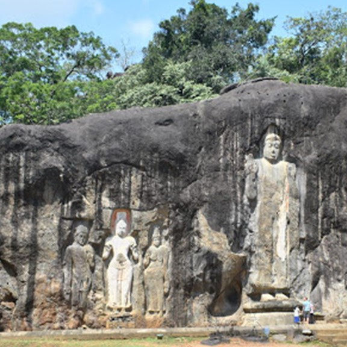
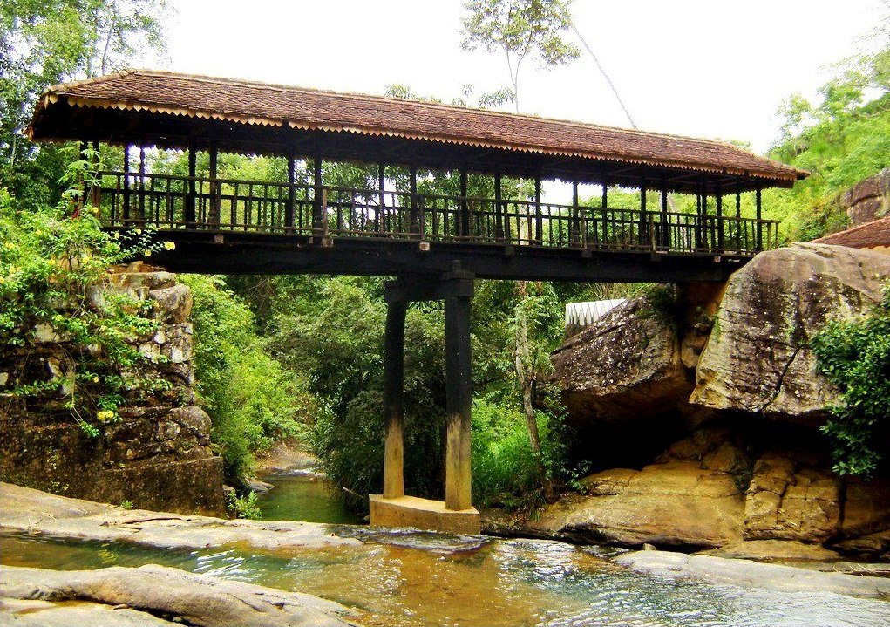
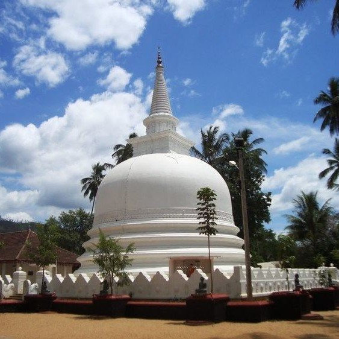
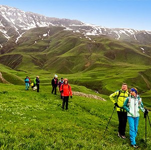
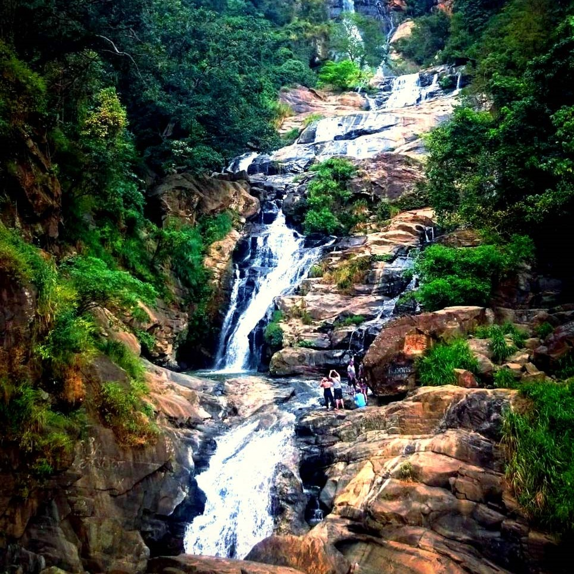
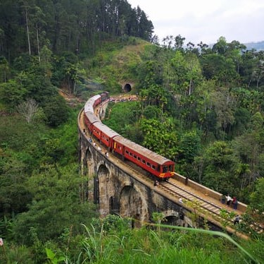

Dunhinda Falls is a very majestic looking waterfall, situated about 5 km from Badulla. Due to its smoky
water drops spray, it is also named the “Bridal Fall” and another reason to get this name is that that the shape
of the waterfall is like a bridal veil.
Dhowa Rock Temple

Dhowa Rock Temple a protected heritage site in Sri Lanka, situated in the central mountains of the Uva
province.
The Dhowa rock temple is famous for its large unfinished Buddha image, carved into the rock face, which is
considered an example of Mahayana sculpture.
Bogoda Wooden Bridge

The Bogoda Wooden Bridge was built in the 16th century during the Dambadeniya era. This is said to be
the oldest surviving wooden bridge in Sri Lanka.
All parts of this bridge were constructed from wood, including the use of wooden nails as fixing material.
Muthiyangana Raja Maha Vihara

Muthiyangana Raja Maha Vihara is an ancient Buddhist temple located in the middle of Badulla town in the
Badulla District of Uva Province in Sri Lanka.
It is one of the significant landmarks in the Buddhist culture and it lies in the center of Badulla
Narangala

Beautiful Narangala, with its golden grass, rises up to a height of over 1500m in the Uva Province of
Sri Lanka. The summit of this second highest mountain in Uva, provides some of the very best views in the entire
tropical island. In addition to it; the reasonable challenge that climbing it offers has made it a great
favorite amongst hikers.
Ella Waterfall

This waterfall measures approx 25 m in height and cascades from an oval-shaped concave rock outcrop.
During the local wet season, the waterfall turns into what is said to resemble an areca flower with withering
petals. But this is not the case in the dry season, where the flow of water reduces dramatically. The falls form
part of the Ravana Ella Wildlife Sanctuary.
Lipton Seat
The Lipton’s Seat lookout is one of Sri Lanka's most impressive viewpoints unless it's misty and cloudy
of course, which is why early morning is the best time to visit. The Scottish tea baron Sir Thomas Lipton used
to survey his burgeoning empire from here, and today it's said emerald hills and tea estates to no fewer than
seven different provinces.
Nine Arch bridge

The Nine Arch Bridge also called the Bridge in the Sky, is a viaduct bridge in Sri Lanka. It is located
in Demodara, between Ella and Demodara railway stations. It is one of the colonial-era railway construction in
the country. The surrounding area has seen a steady increase of tourism due to the bridge's architecture.